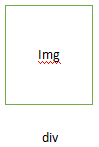
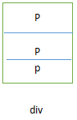
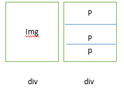

对包含有子元素的元素进行flex后，会影响原有的布局。
例如设置两个div，第一个div包含一个img（图片），第二个div包含多个p元素（对前面的img的说明）。如下图


1：当对着两个两个div进行flex布局后。虽然两个div会同时处在一行内。但第二个div内部多个p元素的排序会被打乱，因为p元素的父元素div被应用了display：flex；后，已经改变了其主轴方向，所有的p元素都会横向排列，而不是原来的纵向排列
2：为了让两个div再同一行内，同时第二个div内部的多个p元素仍按照原有的块元素排序，需要对第二个div。需对第二个div作如下处理。
display：flex；
flex-direction：column；
则会重新改变第二个div的主轴方向。从而得到我们想要的结果。
结果如下：
